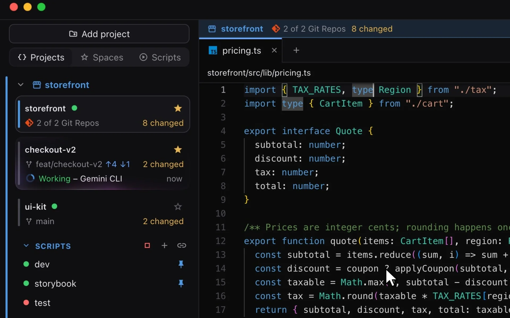
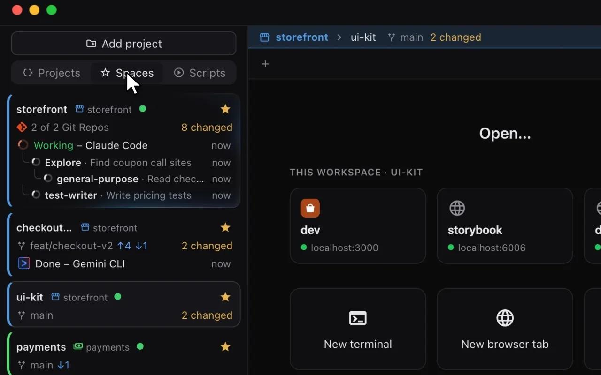
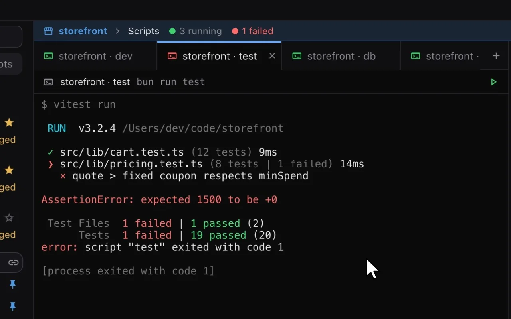
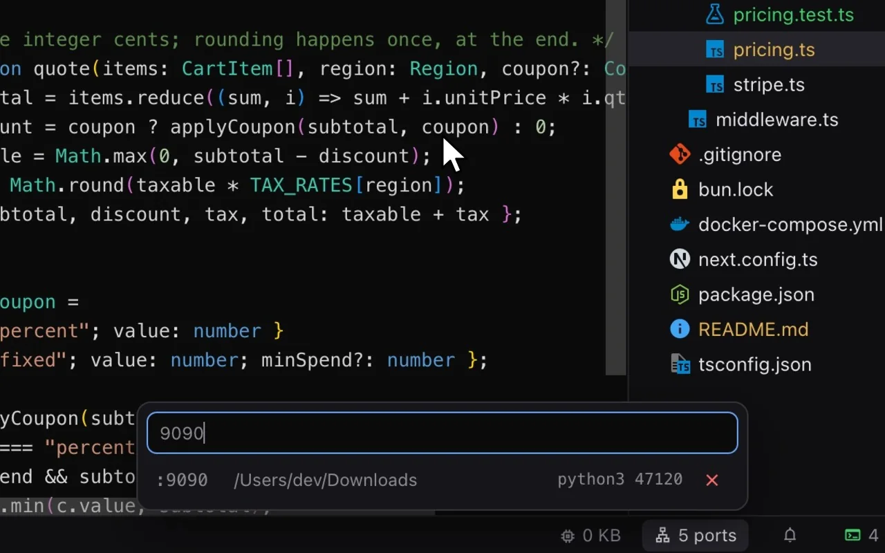

Aira “aye-ra” is a Mac code editor for people who keep several repos open at once. Dev servers, coding agents and git for every project, side by side in one window.
Recording: Aira with three projects open. Claude Code is working in storefront with three subagents and the dev scripts are running. The checkout-v2 space shows Gemini CLI done; back in storefront, the Git tab lists changes from three repositories, and the ports list shows the ports each project holds.
Everything that's running, in plain sight.
Every recording below is the real app, driven with demo projects. Each feature has its own colour, the way each project does in Aira.
Pick Claude Code, Codex, Gemini CLI or one of nine others from the + in the tab bar and give it a task. Every space shows whether its agents are working, waiting for you or done, and Claude Code's subagents nest underneath as they start.
Look away and a finished agent's card keeps glowing until you come back.

Recording: the plus button in the tab bar opens the agent menu and Claude Code is chosen. A task is typed into its session; the storefront card switches to Working, and as the session starts Explore, general-purpose and test-writer subagents they appear one by one in a tree under it. In the checkout-v2 space, Gemini CLI shows Done.
Every space keeps its own window.
A space is a folder you work in: the root, a nested package, a worktree. Switch, and its tabs and panels come back as you left them. Star the busy ones.

Recording: clicking the checkout-v2 space shows its own tab, a Gemini CLI session. Clicking ui-kit shows an empty window. Starring ui-kit and opening the Spaces tab lists the starred spaces from every project.
Start the whole stack with one click.
Pin the scripts you always run, then press Start next to them in the sidebar. They open together in the project's scripts window, and a failing one turns red and keeps its log.

Recording: in the sidebar, the Start button next to storefront's pinned scripts is clicked. dev, storybook and db turn green and open as tabs in the scripts window while the Next.js dev server log streams in. Then Run on the test script: it fails, its tab turns red and the window reads 3 running, 1 failed.
Commit across every repo in the project.
Nested repos and worktrees share one changes tree. Read the diff, let Generate draft the message, then commit, one repository at a time.
Recording: the Git tab lists changes from three repositories. Clicking pricing.ts opens its diff against HEAD, Generate writes a commit message from the checked files, and Commit removes storefront's files from the list.
Find out what's sitting on a port.
The status bar knows which script holds 3000. Search any port, see the process behind it, and free it in one click.

Recording: the ports button in the status bar opens the ports list. Typing 9090 finds a python3 process from the Downloads folder; freeing it leaves "No process of yours is listening on :9090".
A light editor, dark or light.
Monaco for code and diffs, a file tree with git colours, terminals with your login shell, and any font you have installed. Dark, light or follow macOS.
Recording: Settings opens with the Dark theme selected. Choosing Light turns the whole window light, and closing Settings shows the editor and sidebar in the light theme.
Aira starts the CLI you have installed, signed in as you. How much it can show depends on what each tool reports.
Claude Code: exact status and subagents, no setup
Codex: exact status with a hook file
Gemini CLI: exact status, no setup
OpenCode: exact status, no setup
Cursor Agent: status from terminal activity
GitHub Copilot CLI: exact status with a hook file
Aider: status from terminal activity
Amp: status from terminal activity
Goose: exact status with a hook file
Qwen Code: exact status, no setup
Crush: status from terminal activity
Factory Droid: exact status with a hook file
>_Any other CLI: runs as a custom command, without status
Exact status, no setup
Exact status with a hook file you opt into
Status from terminal activity
Claude Code also shows its subagents as they start, and any other CLI runs as a custom command, without status. Not affiliated with any of these projects; names and logos belong to their owners (logo notice).
Build it.
Aira is an open-source early preview for macOS, and there's no signed download yet. You need Bun, Rust and the Xcode Command Line Tools.
Terminal
$ git clone https://github.com/DawnImpulse/ide.git
$ cd ide
$ bun install
$ bun tauri dev
bun tauri build makes Aira.app in src-tauri/target/release/bundle/macos. Agents aren't bundled: install the CLIs you use and Aira finds them on your PATH.